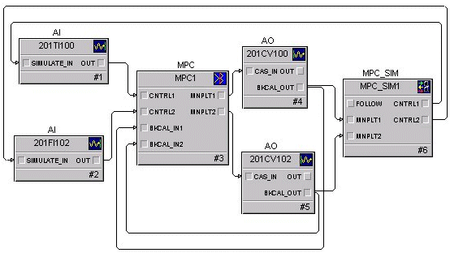

Model Predictive Control Process Simulator function block application example
The MPC Process Simulator function block may be used in conjunction with the MPC function block to implement an operator training environment in an offline system (for example, workstation running DeltaV Simulate). The steps required to create a dynamic simulation of the control are as follows:
You can import the module that contains the MPC function block of interest into the training system along with the associated MPC models.
Add an MPC Process Simulator function block to this module and change the number of inputs and outputs to match those of the MPC function block.
Assign the model used to generate the MPC function block control to the MPC Process Simulator function block. Right-click the MPC function block and select Predict. From the Predict application, click to select a model for use in the simulation.
Wire the BKCAL_OUT of the blocks downstream of the MPC function block to the manipulated inputs of the MPC Process Simulator function block.
Wire the control and constraint outputs of the MPC Process Simulator function block to the SIMULATE_IN of the associated inputs to the MPC function block. Enable Simulate in the analog inputs blocks and set the L_TYPE to Direct Independent.
Once the module containing the MPC Process Simulator function block has been downloaded, the MPC function block should operate similarly to when it is in control of the process. An example of a module containing an MPC Process Simulator function block is shown in the following figure.
